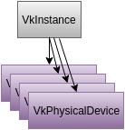
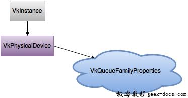

Vulkan 物理设备与队列，通过VkInstance初始化Vulkan后，我们需要在系统中查找并选择一个支持我们所需功能的显卡。实际上，我们可以选择任意数量的显卡并同时使用他们，但在本小节中，我们简单的设定选择规则，即将查找到的第一个图形卡作为我们适合的物理设备。
选择物理设备
通过VkInstance初始化Vulkan后，我们需要在系统中查找并选择一个支持我们所需功能的显卡。实际上，我们可以选择任意数量的显卡并同时使用他们，但在本小节中，我们简单的设定选择规则，即将查找到的第一个图形卡作为我们适合的物理设备。

我们添加函数pickPhysicalDevice并在initVulkan函数中调用。
void initVulkan() {
createInstance();
setupDebugCallback();
pickPhysicalDevice();
}void pickPhysicalDevice() {}
最终我们选择的图形显卡存储在类成员VkPhysicalDevice句柄中。当VkInstance销毁时，这个对象将会被隐式销毁，所以我们并不需要在cleanup函数中做任何操作。
VkPhysicalDevice physicalDevice = VK_NULL_HANDLE;
关于获取图形卡列表的方式与获得扩展列表的方式类似。
uint32_t deviceCount = 0;
vkEnumeratePhysicalDevices(instance, &deviceCount, nullptr);
如果Vulkan支持的设备数为0，那么没有任何意义进行下一步，我们选择抛出异常。
if (deviceCount == 0) {
throw std::runtime_error("failed to find GPUs with Vulkan support!");
}
否则我们分配数组存储所有VkPhysicalDevice的句柄。
std::vector<VkPhysicalDevice> devices(deviceCount);
vkEnumeratePhysicalDevices(instance, &deviceCount, devices.data());
现在我们需要对它们进行评估，检查它们是否适合我们要执行的操作，因为并不是所有的显卡功能一致。为此我们添加一个新的函数:
bool isDeviceSuitable(VkPhysicalDevice device) {
return true;
}
我们将检查是否有任何物理设备符合我们的功能需求。
for (const auto& device : devices) {
if (isDeviceSuitable(device)) {
physicalDevice = device;
break;
}
}if (physicalDevice == VK_NULL_HANDLE) {
throw std::runtime_error("failed to find a suitable GPU!");
}
下一节我们介绍isDeviceSuitable函数，并检查第一个需要满足的功能。在后续的小节中，我们将开始使用更多的Vulkan功能，我们会扩展此功能函数以满足更多的检查条件。
设备需求检测
评估合适的设备我们可以通过遍历一些细节来完成。基本的设备属性像name, type以及Vulkan版本都可以通过vkGetPhysicalDeviceProperties来遍历得到。
VkPhysicalDeviceProperties deviceProperties;
vkGetPhysicalDeviceProperties(device, &deviceProperties);
可以使用vkGetPhysicalDeviceFeatures查询对纹理压缩，64位浮点数和多视图渲染(VR非常有用)等可选功能的支持:
VkPhysicalDeviceFeatures deviceFeatures;
vkGetPhysicalDeviceFeatures(device, &deviceFeatures);
更多遍历物理设备细节的信息，诸如设备内存、队列簇我们将会在后续小节讨论。
例如，我们假设我们的应用程序仅适用于支持geometry shaders的专用显卡。那么isDeviceSuitable函数将如下所示:
bool isDeviceSuitable(VkPhysicalDevice device) {
VkPhysicalDeviceProperties deviceProperties;
VkPhysicalDeviceFeatures deviceFeatures;
vkGetPhysicalDeviceProperties(device, &deviceProperties);
vkGetPhysicalDeviceFeatures(device, &deviceFeatures); return deviceProperties.deviceType == VK_PHYSICAL_DEVICE_TYPE_DISCRETE_GPU &&
deviceFeatures.geometryShader;
}
为了避免纯粹的单一的判断一个设备是否合适，尤其是当你发现多个设备都合适的条件下，你也可以给每一个设备做权值，选择最高的一个。这样，可以通过给予更高权值获取定制化的图形设备，但如果没有一个可用的设备，可以回滚到集成图形设备。你可以按照如下方式实现:
#include <map>...void pickPhysicalDevice() {
... // Use an ordered map to automatically sort candidates by increasing score
std::multimap<int, VkPhysicalDevice> candidates; for (const auto& device : devices) {
int score = rateDeviceSuitability(device);
candidates.insert(std::make_pair(score, device));
} // Check if the best candidate is suitable at all
if (candidates.rbegin()->first > 0) {
physicalDevice = candidates.rbegin()->second;
} else {
throw std::runtime_error("failed to find a suitable GPU!");
}
}int rateDeviceSuitability(VkPhysicalDevice device) {
... int score = 0; // Discrete GPUs have a significant performance advantage
if (deviceProperties.deviceType == VK_PHYSICAL_DEVICE_TYPE_DISCRETE_GPU) {
score += 1000;
} // Maximum possible size of textures affects graphics quality
score += deviceProperties.limits.maxImageDimension2D; // Application can't function without geometry shaders
if (!deviceFeatures.geometryShader) {
return 0;
} return score;
}
我们不需要在小节内实现所有内容，但我们可以了解如何选择图形设备的过程。当然，我们也可以显示图形设备的名称列表，让用户选择。
因为我们刚刚开始，Vulkan的支持是我们唯一需要的，在这里假设任何GPU都可以:
bool isDeviceSuitable(VkPhysicalDevice device) {
return true;
}
在下一小节中，我们将会讨论第一个真正需要检查的设备功能。
队列族
之前已经简要的介绍过，几乎所有的Vulkan操作，从绘图到上传纹理，都需要将命令提交到队列中。有不同类型的队列来源于不同的队列簇，每个队列簇只允许部分commands。例如，可以有一个队列簇，只允许处理计算commands或者只允许内存传输commands:
我们需要检测设备中支持的队列簇，其中哪一个队列簇支持我们想要的commands。为此我们添加一个新的函数findQueueFamilies来查找我们需要的队列簇。现在我们只会寻找一个支持图形commands队列簇，但是我们可以在稍后的小节中扩展更多的内容。

此函数返回满足某个属性的队列簇索引。定义结构体，其中索引-1表示”未找到”:
struct QueueFamilyIndices {
int graphicsFamily = -1; bool isComplete() {
return graphicsFamily >= 0;
}
};
现在我们实现findQueueFamilies函数:
QueueFamilyIndices findQueueFamilies(VkPhysicalDevice device) {
QueueFamilyIndices indices; ... return indices;
}
获取队列簇的列表函数为vkGetPhysicalDeviceQueueFamilyProperties:
uint32_t queueFamilyCount = 0;
vkGetPhysicalDeviceQueueFamilyProperties(device, &queueFamilyCount, nullptr);std::vector<VkQueueFamilyProperties> queueFamilies(queueFamilyCount);
vkGetPhysicalDeviceQueueFamilyProperties(device, &queueFamilyCount, queueFamilies.data());
有关队列簇，结构体VkQueueFamilyProperties包含了具体信息，包括支持的操作类型和基于当前队列簇可以创建的有效队列数。我们至少需要找到一个支持VK_QUEUE_GRAPHICS_BIT的队列簇。
int i = 0;
for (const auto& queueFamily : queueFamilies) {
if (queueFamily.queueCount > 0 && queueFamily.queueFlags & VK_QUEUE_GRAPHICS_BIT) {
indices.graphicsFamily = i;
} if (indices.isComplete()) {
break;
} i++;
}
现在我们有了比较理想的队列簇查询功能，我们可以在isDeviceSuitable函数中使用，确保物理设备可以处理我们需要的命令:
bool isDeviceSuitable(VkPhysicalDevice device) {
QueueFamilyIndices indices = findQueueFamilies(device); return indices.isComplete();
}
很好，我们已经找到了我们需要的物理设备，在下一个小节我们会讨论逻辑设备。
源代码
//physical_device_selection.cpp
#define GLFW_INCLUDE_VULKAN
#include <GLFW/glfw3.h>#include <iostream>
#include <stdexcept>
#include <vector>
#include <cstring>
#include <cstdlib>
#include <optional>const int WIDTH = 800;
const int HEIGHT = 600;const std::vector<const char*> validationLayers = {
"VK_LAYER_KHRONOS_validation"
};#ifdef NDEBUG
const bool enableValidationLayers = false;
#else
const bool enableValidationLayers = true;
#endifVkResult CreateDebugUtilsMessengerEXT(VkInstance instance, const VkDebugUtilsMessengerCreateInfoEXT* pCreateInfo, const VkAllocationCallbacks* pAllocator, VkDebugUtilsMessengerEXT* pDebugMessenger) {
auto func = (PFN_vkCreateDebugUtilsMessengerEXT) vkGetInstanceProcAddr(instance, "vkCreateDebugUtilsMessengerEXT");
if (func != nullptr) {
return func(instance, pCreateInfo, pAllocator, pDebugMessenger);
} else {
return VK_ERROR_EXTENSION_NOT_PRESENT;
}
}void DestroyDebugUtilsMessengerEXT(VkInstance instance, VkDebugUtilsMessengerEXT debugMessenger, const VkAllocationCallbacks* pAllocator) {
auto func = (PFN_vkDestroyDebugUtilsMessengerEXT) vkGetInstanceProcAddr(instance, "vkDestroyDebugUtilsMessengerEXT");
if (func != nullptr) {
func(instance, debugMessenger, pAllocator);
}
}struct QueueFamilyIndices {
std::optional<uint32_t> graphicsFamily; bool isComplete() {
return graphicsFamily.has_value();
}
};class HelloTriangleApplication {
public:
void run() {
initWindow();
initVulkan();
mainLoop();
cleanup();
}private:
GLFWwindow* window; VkInstance instance;
VkDebugUtilsMessengerEXT debugMessenger; VkPhysicalDevice physicalDevice = VK_NULL_HANDLE; void initWindow() {
glfwInit(); glfwWindowHint(GLFW_CLIENT_API, GLFW_NO_API);
glfwWindowHint(GLFW_RESIZABLE, GLFW_FALSE); window = glfwCreateWindow(WIDTH, HEIGHT, "Vulkan", nullptr, nullptr);
} void initVulkan() {
createInstance();
setupDebugMessenger();
pickPhysicalDevice();
} void mainLoop() {
while (!glfwWindowShouldClose(window)) {
glfwPollEvents();
}
} void cleanup() {
if (enableValidationLayers) {
DestroyDebugUtilsMessengerEXT(instance, debugMessenger, nullptr);
} vkDestroyInstance(instance, nullptr); glfwDestroyWindow(window); glfwTerminate();
} void createInstance() {
if (enableValidationLayers && !checkValidationLayerSupport()) {
throw std::runtime_error("validation layers requested, but not available!");
} VkApplicationInfo appInfo = {};
appInfo.sType = VK_STRUCTURE_TYPE_APPLICATION_INFO;
appInfo.pApplicationName = "Hello Triangle";
appInfo.applicationVersion = VK_MAKE_VERSION(1, 0, 0);
appInfo.pEngineName = "No Engine";
appInfo.engineVersion = VK_MAKE_VERSION(1, 0, 0);
appInfo.apiVersion = VK_API_VERSION_1_0; VkInstanceCreateInfo createInfo = {};
createInfo.sType = VK_STRUCTURE_TYPE_INSTANCE_CREATE_INFO;
createInfo.pApplicationInfo = &appInfo; auto extensions = getRequiredExtensions();
createInfo.enabledExtensionCount = static_cast<uint32_t>(extensions.size());
createInfo.ppEnabledExtensionNames = extensions.data(); VkDebugUtilsMessengerCreateInfoEXT debugCreateInfo;
if (enableValidationLayers) {
createInfo.enabledLayerCount = static_cast<uint32_t>(validationLayers.size());
createInfo.ppEnabledLayerNames = validationLayers.data(); populateDebugMessengerCreateInfo(debugCreateInfo);
createInfo.pNext = (VkDebugUtilsMessengerCreateInfoEXT*) &debugCreateInfo;
} else {
createInfo.enabledLayerCount = 0; createInfo.pNext = nullptr;
} if (vkCreateInstance(&createInfo, nullptr, &instance) != VK_SUCCESS) {
throw std::runtime_error("failed to create instance!");
}
} void populateDebugMessengerCreateInfo(VkDebugUtilsMessengerCreateInfoEXT& createInfo) {
createInfo = {};
createInfo.sType = VK_STRUCTURE_TYPE_DEBUG_UTILS_MESSENGER_CREATE_INFO_EXT;
createInfo.messageSeverity = VK_DEBUG_UTILS_MESSAGE_SEVERITY_VERBOSE_BIT_EXT | VK_DEBUG_UTILS_MESSAGE_SEVERITY_WARNING_BIT_EXT | VK_DEBUG_UTILS_MESSAGE_SEVERITY_ERROR_BIT_EXT;
createInfo.messageType = VK_DEBUG_UTILS_MESSAGE_TYPE_GENERAL_BIT_EXT | VK_DEBUG_UTILS_MESSAGE_TYPE_VALIDATION_BIT_EXT | VK_DEBUG_UTILS_MESSAGE_TYPE_PERFORMANCE_BIT_EXT;
createInfo.pfnUserCallback = debugCallback;
} void setupDebugMessenger() {
if (!enableValidationLayers) return; VkDebugUtilsMessengerCreateInfoEXT createInfo;
populateDebugMessengerCreateInfo(createInfo); if (CreateDebugUtilsMessengerEXT(instance, &createInfo, nullptr, &debugMessenger) != VK_SUCCESS) {
throw std::runtime_error("failed to set up debug messenger!");
}
} void pickPhysicalDevice() {
uint32_t deviceCount = 0;
vkEnumeratePhysicalDevices(instance, &deviceCount, nullptr); if (deviceCount == 0) {
throw std::runtime_error("failed to find GPUs with Vulkan support!");
} std::vector<VkPhysicalDevice> devices(deviceCount);
vkEnumeratePhysicalDevices(instance, &deviceCount, devices.data()); for (const auto& device : devices) {
if (isDeviceSuitable(device)) {
physicalDevice = device;
break;
}
} if (physicalDevice == VK_NULL_HANDLE) {
throw std::runtime_error("failed to find a suitable GPU!");
}
} bool isDeviceSuitable(VkPhysicalDevice device) {
QueueFamilyIndices indices = findQueueFamilies(device); return indices.isComplete();
} QueueFamilyIndices findQueueFamilies(VkPhysicalDevice device) {
QueueFamilyIndices indices; uint32_t queueFamilyCount = 0;
vkGetPhysicalDeviceQueueFamilyProperties(device, &queueFamilyCount, nullptr); std::vector<VkQueueFamilyProperties> queueFamilies(queueFamilyCount);
vkGetPhysicalDeviceQueueFamilyProperties(device, &queueFamilyCount, queueFamilies.data()); int i = 0;
for (const auto& queueFamily : queueFamilies) {
if (queueFamily.queueCount > 0 && queueFamily.queueFlags & VK_QUEUE_GRAPHICS_BIT) {
indices.graphicsFamily = i;
} if (indices.isComplete()) {
break;
} i++;
} return indices;
} std::vector<const char*> getRequiredExtensions() {
uint32_t glfwExtensionCount = 0;
const char** glfwExtensions;
glfwExtensions = glfwGetRequiredInstanceExtensions(&glfwExtensionCount); std::vector<const char*> extensions(glfwExtensions, glfwExtensions + glfwExtensionCount); if (enableValidationLayers) {
extensions.push_back(VK_EXT_DEBUG_UTILS_EXTENSION_NAME);
} return extensions;
} bool checkValidationLayerSupport() {
uint32_t layerCount;
vkEnumerateInstanceLayerProperties(&layerCount, nullptr); std::vector<VkLayerProperties> availableLayers(layerCount);
vkEnumerateInstanceLayerProperties(&layerCount, availableLayers.data()); for (const char* layerName : validationLayers) {
bool layerFound = false; for (const auto& layerProperties : availableLayers) {
if (strcmp(layerName, layerProperties.layerName) == 0) {
layerFound = true;
break;
}
} if (!layerFound) {
return false;
}
} return true;
} static VKAPI_ATTR VkBool32 VKAPI_CALL debugCallback(VkDebugUtilsMessageSeverityFlagBitsEXT messageSeverity, VkDebugUtilsMessageTypeFlagsEXT messageType, const VkDebugUtilsMessengerCallbackDataEXT* pCallbackData, void* pUserData) {
std::cerr << "validation layer: " << pCallbackData->pMessage << std::endl; return VK_FALSE;
}
};int main() {
HelloTriangleApplication app; try {
app.run();
} catch (const std::exception& e) {
std::cerr << e.what() << std::endl;
return EXIT_FAILURE;
} return EXIT_SUCCESS;
}